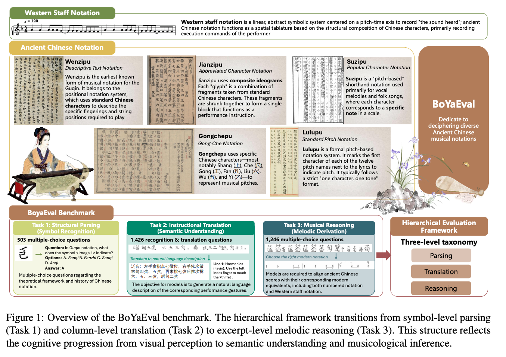
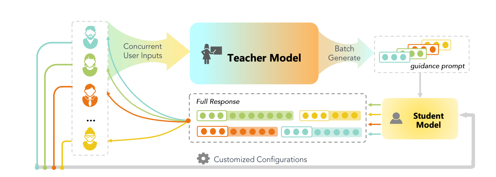
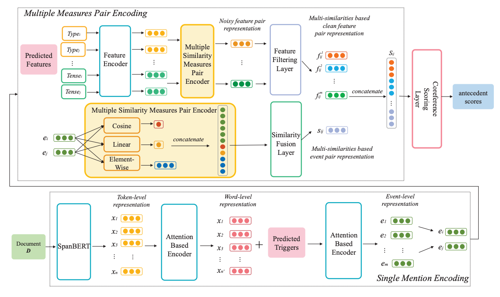
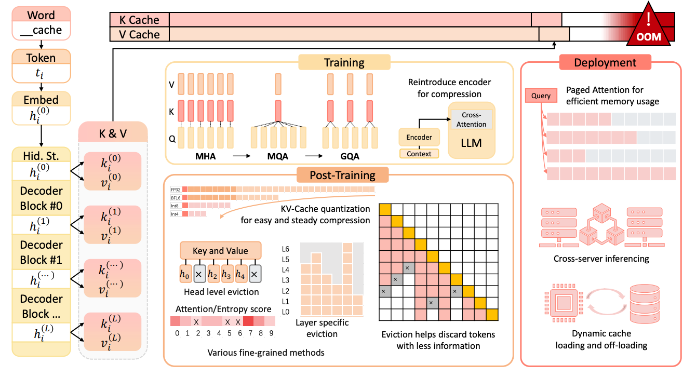
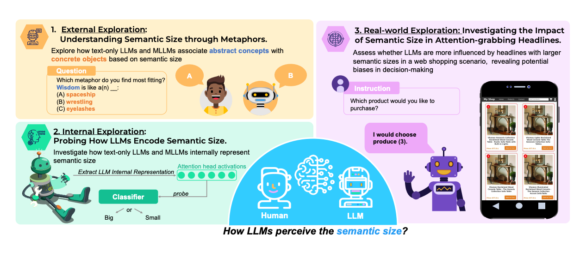

Yao Yao
Ph.D. Candidate · Department of Computer Science and Engineering
Shanghai Jiao Tong University
Research
Human-centered AI · Cognition-informed LLMs · Structured reasoning · Long-context memory · Multimodal systems
I take a human-centered approach to AI, asking how insights from human cognition can guide large language models to reason more clearly, remember what matters, and use multimodal evidence more faithfully. I develop and evaluate methods for structured reasoning, long-context memory, and multimodal interaction, spanning graph-based reasoning, streaming memory, training-free interventions, and interactive systems. My goal is to build AI that complements human strengths and supports more reliable human–AI collaboration.
Education
Shanghai Jiao Tong University
Ph.D. Candidate, Computer Science and Engineering · Advisor: Prof. Hai Zhao
Southeast University, Chien-Shiung Wu College
B.Eng. · Advisor: Prof. Haikun Wei
Publications & Manuscripts
SMART: Sink-based Modality-Aware Redistribution of Transformer Attention
Dian Yu, Yao Yao, Hai Zhao · EMNLP 2026 · Co-first author
Introduces Banana-Counting to diagnose whether multimodal models favor text or images, then proposes a training-free method that redirects excess attention from low-information sink tokens toward the under-attended modality. The work targets more balanced and reliable multimodal reasoning.
Manuscript ↗
GIMFlow: An LLM-Guided Dialogue-to-Music System for GIM-Inspired Well-Being Experiences
Ruijia Huang, Yao Yao, Hai Zhao · EMNLP 2026 Demo · Co-first author
Presents a dialogue-to-music research system that combines multi-stage conversation, emotional-trajectory planning, symbolic music generation, and session logging. It offers a reproducible, non-clinical demonstration of personalized creative interaction.
Code ↗PAR: Training-Free Positional Perturbation and Attention Recycling for Faithful OCR
Yao Yao, Manwen Liao, Weitian Zhang, Zuchao Li, Hai Zhao · ACL 2026
Identifies how vision-language models can rely on memorized linguistic patterns instead of reading the text in an image. PAR combines positional perturbation with attention recycling at inference time to steer the model back toward visual evidence and reduce OCR hallucinations without retraining.
Paper ↗Code ↗
GoT-R1: Internalizing Graph-of-Thought via Structural Reinforcement for High-Density Reasoning
Zuchao Li, Qiwei Li, Yao Yao, Hai Zhao, Lefei Zhang, Bo Du · Findings of ACL 2026
Moves graph-structured reasoning from an external representation into the model’s own generation process. Structural training and reinforcement encourage compact reasoning graphs, aiming to solve complex tasks with less redundant narration and token overhead.
Paper ↗Models ↗
BoYaEval: Evaluating Multimodal Large Language Models on Understanding Ancient Chinese Musical Scores
Jiajia Li, Weizhi Xue, Yao Yao, Qiwei Li, Chenchong, Zuchao Li, Ping Wang, Hai Zhao · ACL 2026
Introduces a benchmark of 3,175 images spanning five ancient Chinese music notation systems. Its three evaluation levels test symbol recognition, playing-technique interpretation, and musical reasoning; results across 21 multimodal models reveal a pronounced gap in reasoning over specialized spatial symbols.
Paper PDF ↗Dataset ↗
SirLLM: Streaming Infinite Retentive LLM
Yao Yao, Zuchao Li, Hai Zhao · ACL 2024
Proposes a streaming memory mechanism for very long conversations. By using token entropy to retain important information and memory decay to release less useful context, SirLLM improves long-term information retention without model fine-tuning.
Paper ↗Code ↗
GoT: Effective Graph-of-Thought Reasoning in Language Models
Yao Yao, Zuchao Li, Hai Zhao · Findings of NAACL 2024
Represents intermediate thoughts as nodes and their reasoning relationships as edges, allowing models to organize non-linear thought processes rather than relying only on a single chain. The framework supports richer decomposition and integration of reasoning steps.
Paper ↗Code ↗
GKT: A Novel Guidance-Based Knowledge Transfer Framework for Efficient Cloud-edge Collaboration LLM Deployment
Yao Yao, Zuchao Li, Hai Zhao · Findings of ACL 2024
Develops a cloud–edge collaboration framework in which a larger model guides a smaller model that performs generation. It explores how knowledge transfer can make LLM deployment more practical when local computation is limited.
Code ↗
Reference Trustable Decoding: A Training-Free Augmentation Paradigm for Large Language Models
Luohe Shi, Yao Yao, Zuchao Li, et al. · NeurIPS 2024
Studies a training-free decoding approach that uses reference information to guide generation. The contribution focuses on improving how faithfully a model follows its source material and reducing unsupported or hallucinated content.
Learning Event-aware Measures for Event Coreference Resolution
Yao Yao, Zuchao Li, Hai Zhao · Findings of ACL 2023
Learns event-aware semantic measures for deciding whether different mentions refer to the same event. The work contributes a more structured way to compare event meaning in coreference resolution.

Igniting Language Intelligence: The Hitchhiker’s Guide from Chain-of-Thought Reasoning to Language Agents
Zhuosheng Zhang, Yao Yao, Aston Zhang, et al. · ACM Computing Surveys 2025
Surveys the development from Chain-of-Thought reasoning to tool-using language agents. It organizes methods for reasoning enhancement, tool use, and agent construction into a research framework that helps connect these related areas.
XQuant: Achieving Ultra-Low Bit KV Cache Quantization with Cross-Layer Compression
Luohe Shi, Hongyi Zhang, Yao Yao, et al. · EMNLP 2025
Investigates ultra-low-bit quantization of the KV cache together with cross-layer compression. The method targets lower memory and inference costs for long-context and high-throughput language-model serving.
Keep the Cost Down: A Review on Methods to Optimize LLM’s KV-Cache Consumption
Luohe Shi, Hongyi Zhang, Yao Yao, Zuchao Li, Hai Zhao · COLM 2024
Reviews methods for reducing the memory consumed by LLM KV caches across pre-training, deployment, and inference. The paper compares how these approaches save space and summarizes measures for evaluating both long-context capability and efficiency.
Paper PDF ↗
How Deep is Love in LLMs’ Hearts? Exploring Semantic Size in Human-like Cognition
Yao Yao, Zuchao Li, Hai Zhao · IEEE TPAMI · Major revision, not yet published
Examines how language models represent the semantic size of abstract concepts, comparing their patterns with human cognition. The study also investigates whether multimodal training brings those representations closer to human-like understanding.

Research & Teaching Experience
SupraLab · Research Intern
Avatar intelligence, omni-modal full-duplex models, and personalized memory navigation.
Beijing Institute of Electronic Information · Project Participant
Multi-agent formation simulation, task decomposition, and interactive learning.
SJTU × Huawei Ascend · Instructor
Local LLM deployment, inference services, and reproducible course materials.
ICPRAI Tutorial · Co-Instructor
On the Shoulders of LLMs: From LLM Optimization to LLM Agents.
Selected Honors & Service
- Huatai Securities Scholarship, Shanghai Jiao Tong University (2024).
- Top 10 Most Influential Graduates, Southeast University (2022).
- Star of Chien-Shiung Wu College, 1st Place (2021); President’s Scholarship (2020).
- Reviewer for IEEE TPAMI, ACL, ICLR, and AAAI, according to the supplied CV.
Technical Skills
Python · PyTorch · Transformers · Linux · LLM inference and deployment · Evaluation pipelines